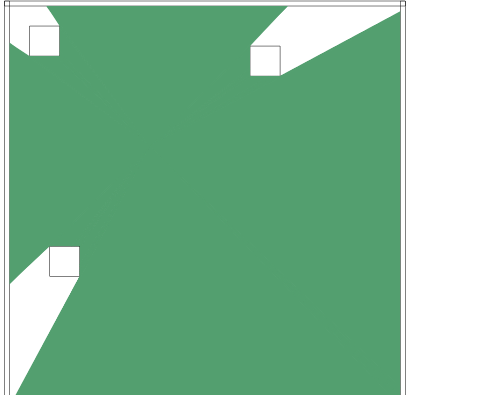

Ray Cast Lighting Program
 Ray Casting Algorithm
- A ray can be represented with a point and a vector. The point is the origin of the ray, and the vector represents the angle and maximum distance.
- Set the initial maximum distance for the ray, and the initial maximum distance point. 3.Iterate through all objects that need to be tested for intersection.
- Check for intersection between the ray and the object
- If there is an intersection between the ray and the object, get the distance to the origin
- If the new distance to the origin is smaller than the recorded one record it and the point of intersection.
- return intersection point